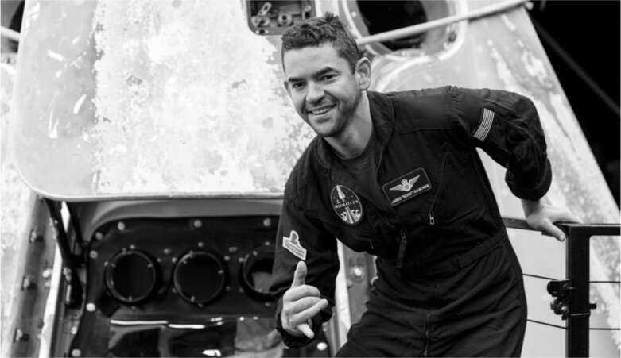
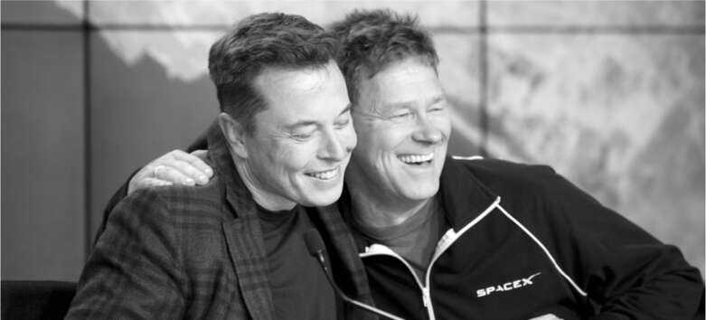

Chuyến bay vào tháng 7 năm 2021 của Branson và Bezos đặt ra câu hỏi: Liệu Musk có nối gót họ, trở thành tỷ phú thứ ba bay vào vũ trụ? Dù ưa thích sự chú ý và những cuộc phiêu lưu mạo hiểm, ông chưa từng cân nhắc điều đó. Musk khẳng định sứ mệnh của mình hướng đến nhân loại, chứ không phải bản thân, một tuyên bố nghe có vẻ khoa trương nhưng cũng chứa đựng phần nào sự thật. Ý tưởng tên lửa chỉ là món đồ chơi của các tỷ phú có thể ảnh hưởng tiêu cực đến ngành du hành vũ trụ tư nhân.
Thay vào đó, cho chuyến bay dân sự đầu tiên của SpaceX, ông chọn Jared Isaacman, một doanh nhân công nghệ kín tiếng kiêm phi công lái máy bay phản lực. Isaacman toát lên vẻ khiêm nhường, điềm tĩnh của một nhà thám hiểm dày dạn kinh nghiệm, người đã chứng tỏ bản thân trên nhiều lĩnh vực đến mức không cần phải phô trương. Isaacman bỏ học cấp ba năm 16 tuổi để làm việc cho một công ty xử lý thanh toán, sau đó thành lập công ty riêng, Shift4 Payments, xử lý hơn 200 tỷ đô la thanh toán mỗi năm cho các nhà hàng và chuỗi khách sạn. Anh trở thành một phi công tài ba, biểu diễn tại các buổi trình diễn hàng không và lập kỷ lục thế giới bằng việc bay vòng quanh thế giới trên một máy bay phản lực hạng nhẹ trong 62 giờ. Sau đó, anh đồng sáng lập một công ty sở hữu 150 máy bay phản lực và cung cấp đào tạo cho quân đội và các nhà thầu quốc phòng.
Isaacman mua quyền chỉ huy chuyến bay ba ngày từ SpaceX—được đặt tên là Inspiration4—trở thành sứ mệnh quỹ đạo tư nhân đầu tiên trong lịch sử. Mục đích của anh là gây quỹ cho Bệnh viện Nghiên cứu Trẻ em St. Jude ở Memphis, và anh đã mời Hayley Arceneaux, một người sống sót sau ung thư xương 29 tuổi, cùng hai thường dân khác tham gia phi hành đoàn.
Một tuần trước ngày phóng dự kiến, Musk đã có cuộc gọi chuẩn bị kéo dài hai giờ với đội ngũ SpaceX. Như thường lệ đối với các sứ mệnh có người lái, ông có bài phát biểu tiêu chuẩn về an toàn. "Tôi muốn bất kỳ ai có bất kỳ lo lắng hoặc đề xuất nào hãy gửi ghi chú trực tiếp cho tôi", ông nói.
Nhưng ông biết rằng những dự án lớn luôn đi kèm rủi ro, và ông cũng biết—giống như Isaacman—rằng điều quan trọng là những nhà thám hiểm phải chấp nhận chúng. Đầu cuộc gọi, họ đã đề cập đến một rủi ro chưa được công bố. "Có một rủi ro mà chúng tôi muốn thông báo cho ông", một trong những quản lý chuyến bay nói với Musk. "Chúng tôi dự định bay cao hơn so với nhiệm vụ thông thường của Trạm Vũ trụ và hầu hết các trải nghiệm bay vào vũ trụ có người lái khác." Thật vậy, khoang tàu SpaceX Dragon sẽ quay quanh quỹ đạo ở độ cao 364 dặm (585 km). Đó là quỹ đạo cao nhất đối với bất kỳ phi hành đoàn nào kể từ sứ mệnh Tàu con thoi để phục vụ Kính viễn vọng Không gian Hubble vào năm 1999. "Rủi ro thực sự rất lớn liên quan đến mảnh vỡ quỹ đạo", người quản lý nói.
Mảnh vỡ quỹ đạo là rác trôi nổi trong không gian từ tàu vũ trụ, vệ tinh không còn hoạt động và các vật thể nhân tạo khác. Vào thời điểm Inspiration4 phóng, có 129 triệu mảnh vụn trong không gian quá nhỏ để theo dõi. Một số tàu vũ trụ đã bị chúng làm hỏng. Độ cao cực lớn của sứ mệnh khiến mọi thứ trở nên tồi tệ hơn; những mảnh vỡ này tồn tại lâu hơn ở độ cao lớn hơn, nơi có ít lực cản khiến chúng bốc cháy hoặc rơi xuống Trái đất. "Chúng tôi lo ngại rằng việc khoang tàu bị mảnh vỡ xuyên thủng hoặc tấm chắn nhiệt bị hư hại có thể gây nguy hiểm cho phương tiện khi quay trở lại", người báo cáo cho biết.
Ông Hans Koenigsmann, người sắp nghỉ hưu theo sự gợi ý của Musk, đã được thay thế vị trí phó chủ tịch phụ trách độ tin cậy bay bởi Bill Gerstenmaier, cựu quan chức NASA dày dạn kinh nghiệm, thường được gọi là Gerst. Ông Gerstenmaier đã trình bày với Musk khuyến nghị của đội ngũ độ tin cậy để giảm thiểu rủi ro: thay đổi hướng tàu vũ trụ Dragon khi nó quay quanh Trái Đất, giúp giảm thiểu khả năng va chạm với mảnh vỡ. Thay đổi quá nhiều sẽ khiến bộ tản nhiệt quá lạnh, nhưng họ đã đạt được sự đồng thuận về cách cân bằng hai rủi ro này. Với hướng cũ, nguy cơ va chạm mảnh vỡ là khoảng 1/700. Hướng mới sẽ giảm nguy cơ xuống còn khoảng 1/2000. Tuy nhiên, ông cũng trình bày một slide cảnh báo rõ ràng: "Có sự không chắc chắn đáng kể trong dự đoán rủi ro." Musk đã chấp thuận kế hoạch này.
Ông Gerstenmaier tiếp tục lưu ý rằng có thể có một phương pháp an toàn hơn: bay ở độ cao thấp hơn. "Có những quỹ đạo tiềm năng ở độ cao thấp hơn," ông nói, "bao gồm cả việc hạ xuống một trăm chín mươi km." Họ đã tìm ra cách thực hiện việc giảm độ cao này và vẫn đến được điểm hạ cánh theo kế hoạch.
"Tại sao chúng ta không làm vậy?" Musk hỏi.
"Khách hàng muốn bay cao hơn Trạm Vũ trụ Quốc tế," Gerstenmaier giải thích, đề cập đến Isaacman. "Anh ấy thực sự muốn bay ở độ cao cao nhất có thể. Chúng tôi đã thông báo cho anh ấy về tất cả những vấn đề mảnh vỡ quỹ đạo này. Anh ấy và phi hành đoàn hiểu rõ rủi ro và chấp nhận nó."
"Được rồi, tốt," Musk đáp, ông luôn tôn trọng những người sẵn sàng chấp nhận rủi ro. "Tôi nghĩ điều đó là công bằng, miễn là anh ấy được thông báo đầy đủ."
Sau đó, khi được hỏi tại sao không chọn độ cao thấp hơn, Isaacman nói: "Nếu chúng ta sẽ quay lại mặt trăng, và chúng ta sẽ đến sao Hỏa, chúng ta phải vượt ra khỏi vùng an toàn của mình."
Lần cuối cùng thường dân được phóng lên quỹ đạo là sứ mệnh tàu con thoi Challenger năm 1986 chở theo giáo viên Christa McAuliffe, đã phát nổ một phút sau khi cất cánh. Grimes cảm thấy đó là một vết thương tâm lý cho nước Mỹ cần được chữa lành, và Inspiration4 sẽ làm điều đó. Vì vậy, cô đảm nhận vai trò "phù thủy trưởng", niệm chú may mắn lên tên lửa trước khi phóng.
Như thường lệ trong những khoảnh khắc căng thẳng, Musk đánh lạc hướng tâm trí bằng cách nghĩ về tương lai. Ngồi trong phòng điều khiển bên cạnh Kiko Dontchev, người đang cố gắng tập trung vào quá trình đếm ngược, ông hỏi về hệ thống Starship đang được chế tạo ở Boca Chica và làm thế nào để thuyết phục các kỹ sư chuyển đến đó từ Florida.
Hans Koenigsmann đang tham dự buổi phóng cuối cùng của mình. Sau hai mươi năm làm việc tại SpaceX, bắt đầu với nhóm kỹ sư dày dạn kinh nghiệm đã phóng các chuyến bay Falcon 1 đầu tiên trên đảo Kwajalein, Musk đã cho ông nghỉ việc sau báo cáo về việc không tuân thủ lệnh thời tiết của FAA. Sau khi tên lửa Inspiration4 bay lên, ông tiến đến và ôm Musk một cách ngượng nghịu để nói lời tạm biệt. "Tôi lo lắng rằng mình sẽ hơi buồn hoặc xúc động," Koenigsmann nói. "Tôi đã ở đó lâu hơn bất kỳ ai khác." Họ nói chuyện trong vài phút về tầm quan trọng của sứ mệnh dân sự này đối với lịch sử khám phá không gian. Khi Koenigsmann bắt đầu rời đi, Musk quay sang điện thoại để kiểm tra Twitter. Grimes huých anh. "Đây là nhiệm vụ cuối cùng của ông ấy," cô nói.
"Tôi biết," Musk đáp, rồi nhìn Koenigsmann và gật đầu.
"Tôi không cảm thấy bị xúc phạm," Koenigsmann nói. "Musk rất quan tâm, nhưng anh ấy không phải là người hay thể hiện tình cảm."
"Chúc mừng @elonmusk và đội ngũ @SpaceX đã phóng thành công Inspiration4 đêm qua," Bezos đăng trên Twitter. "Thêm một bước tiến tới tương lai mà không gian sẽ dành cho tất cả chúng ta." Musk trả lời lịch sự nhưng ngắn gọn, "Cảm ơn."
Isaacman hào hứng đến mức đề nghị chi 500 triệu đô la cho ba chuyến bay trong tương lai, với mục tiêu bay lên quỹ đạo cao hơn và thực hiện chuyến đi bộ ngoài không gian trong bộ đồ mới do SpaceX thiết kế. Ông cũng yêu cầu được là khách hàng tư nhân đầu tiên bay trên Starship khi con tàu sẵn sàng.
Nhiều khách hàng tiềm năng khác cũng muốn đặt chỗ cho các chuyến bay. Một trong số họ, một nhà tổ chức các trận đấu võ thuật tổng hợp, muốn thực hiện một trận đấu không trọng lực trong không gian. Musk đã cười lớn khi cân nhắc khả năng này trong một buổi tối uống rượu ở Boca Chica. "Chúng ta không nên làm thế," Bill Riley nói.
"Sao lại không?" Musk hỏi. "Gwynne nói họ sẽ trả nửa tỷ đô la."
"Uy tín của chúng ta sẽ mất hết," Sam Patel, kỹ sư phụ trách xây dựng Starbase, trả lời.
"Ừ, chúng ta không nên làm điều đó trong thời gian tới." Musk đồng ý. "Có lẽ chỉ sau khi việc lên quỹ đạo trở nên bình thường."
Chuyến bay Inspiration4, do một công ty tư nhân thực hiện cho các công dân tư nhân, đã báo trước một nền kinh tế quỹ đạo mới, một nền kinh tế sẽ tràn ngập các nỗ lực kinh doanh, vệ tinh thương mại và những cuộc phiêu lưu vĩ đại. "SpaceX và Elon là một câu chuyện thành công đáng kinh ngạc," Giám đốc NASA Bill Nelson nói với tôi vào sáng hôm sau. "Có sự hiệp lực giữa khu vực công và khu vực tư nhân, và tất cả đều vì lợi ích của nhân loại."
Khi Musk suy ngẫm về ý nghĩa của vụ phóng, ông trở nên triết lý theo kiểu Hướng dẫn du lịch Ngân hà của mình, suy tư về nỗ lực của con người. "Việc chế tạo ô tô điện đại trà là điều tất yếu," ông nói. "Nó sẽ xảy ra dù không có tôi. Nhưng việc trở thành một nền văn minh du hành vũ trụ thì không phải là điều tất yếu." Năm mươi năm trước, Mỹ đã đưa người lên mặt trăng. Nhưng kể từ đó, không có tiến bộ nào. Thậm chí còn thụt lùi. Tàu con thoi chỉ có thể bay trên quỹ đạo Trái đất thấp, và sau khi nó ngừng hoạt động, Mỹ thậm chí không thể làm được điều đó nữa. "Công nghệ không tự động tiến bộ," Musk nói. "Chuyến bay này là một ví dụ tuyệt vời về việc tiến bộ đòi hỏi nỗ lực của con người."

Jared Isaacman

Musk cùng Hans Koenigsmann